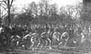

The question of exactly which of three Imperial College students, Tony Watts, Robert (Bob) Gigg and Gordon Brown first thought of organising a relay race in nearby Hyde Park remains a subject of debate to this day. Nevertheless, between them and with the help of other cross-country club members, the idea grew into reality. Six London teams plus Reading, Southampton, Birmingham Universities and Northampton Engineering College were invited to Hyde Park for 2:30pm on Saturday 19th March, 1949. While those first teams ran 6 laps of a 2 mile and 1312 yard course, skirting round the edge of the park, the organisers couldn’t possibly have predicted that they had started a race which would gradually grow in popularity such that it would attract teams from all around Great Britain and from many European countries. It was perhaps fitting that Imperial College won that first event; their team consisted of David Stead, J.J. Billups, Jimmy Sadler, R. W. Freeman, Tony Watts and Bob Gigg, who also ran the fastest lap of the day (13:58).

1950 brought more than double the number of competing teams and also a very tight finish where Mike Barrett, running for Battersea, just managed to hold off Kings College.
By the time of the third relay on a ‘cold, blustering’ March day in 1951, there were 22 teams, all male, taking part. King’s College, London, won that particular race but now there were more teams from further afield. The first of many international athletes, John Disley an Olympic Steeplechase medallist, made an appearance for Loughborough setting a new course record. The first time that the Sir Roderic Hill cup left London was in 1954 when Manchester University took the title. That same year, a guest team not competing for the trophy, set a course record of an incredible 81:03, admittedly they did have the Australian Olympic 1500m finalist D. Macmillan and John Disley to help them round.
Persistent snow put the 1955 race in jeopardy but a last minute thaw allowed Loughborough to win the race for the first time and J. Knopf of Selwyn College, Cambridge, to set a course record.
The 10th Hyde Park Relay in 1958 was celebrated with course records set in both team and individual events; Liverpool University shattered the existing record by 51 seconds (81:37) dragging Imperial, Southampton and Loughborough to also break the previous time. Martyn Hyman of Southampton ran 12:39, slicing 16 seconds off the old record.
A new trophy was introduced in 1959, the Imperial College Union Cup, which was awarded to the fastest team from a college with less than 500 male students.
In 1961, on the insistence of the Royal Parks Police who predicted problems with ever increasing numbers of cars and of athletes charging along the roadside over the Serpentine Bridge, the old course had to be re-routed. The new course was longer (2 miles, 1740 yards) and followed the banks of the Serpentine, thus entering Kensington Gardens for the first time. This was, according to ‘Felix’, Imperial College’s Student newspaper, "one of the most exciting races. IC in the form of J. Collins took a five second lead at the end of the fourth lap and J. Cleator, running next, put up the third fastest time of the day and increased the gap to 30 seconds". Unfortunately for Imperial, Ron Hill (running for Manchester) and D. M. Turner (Queen’s College, Cambridge) ran the fastest two times of the day and overtook G. Wenk of IC, pushing them into 3rd place. D. M. Turner, an international, went on to run the fastest lap a total of six times, making him the most successful individual in the Hyde Park Relay’s history.
After the close finish of the previous year, Imperial College won the 14th Hyde Park Relay setting a new course record in the process (88:31, 2miles & 1740 yards). 1962 was also the year in which Herb Elliot graced the event with his presence, running the fourth fastest time of the day. In 1963, Manchester achieved their third win in five years.
A touch of inspiration and, perhaps, an indication of the advances in and growing accessibility of transportation were the invitation of several European Universities in 1966. In 1967 there were seven European teams from a total of eighty-eight and there have been contingents from, for example, Holland, Germany, France, Poland, Spain and Belgium ever since.
The winning teams from 1949 to 1968 were awarded the ‘Sir Roderic Hill Cup’ which was donated to the event by Air Chief Marshall Sir Roderic Hill, who was the Rector of Imperial College at the time of the first event. As stated on the cover of the original programme, it was meant to be a perpetual cup in that it would always be returned the following year to be awarded to the new winners. Unfortunately, in 1968 Edinburgh University made the claim that after having won the race for three consecutive years they had won the cup outright and refused to return it. Now, thirty years later, the solid silver cup is due to be returned in time for the 50th event.

First Hyde Park Relay, March 1949.
{kind=link}
A minor last minute organisational trauma is customary for most Hyde Park Relays. However, 1974 was particularly memorable in that the officials did not arrive on time; the loan of a stopwatch from Cologne University meant that the race could finally be started! Jim Brown of Brunel (WLIoHE) set a fastest lap of 13:21. Another new trophy was introduced that year, the ‘Steve Webb Trophy’ for the second placed team.
1976 was the first time that the winner’s trophy (at this time the Lady Roderic Hill Cup) left the British Isles with Cologne becoming the first European team to win the event by beating Loughborough into second place. One of the more famous athletes to have taken part, David Moorcroft, ran the fastest lap to equal the course record of 13:21. Allegedly, this was the year that some of the University of Belgium team were apprehended by police for trying to rock a car in Queen’s Gate; they managed to escape further detention by claiming not to speak English. Loughborough avenged their defeat of the previous year by winning in 1977, an event which was to be repeated a further twelve times in the following twenty years.
Another big name features in the result list of 1978, that of Sebastian Coe running the fastest lap of the day (13:24) while in 1980, marathon expert Hugh Jones set the current lap record of 13:12.
A lack of demand in earlier years was the likely reason for there not being a ladies race. However, in response to the rapid growth of the women’s running scene, 1980 brought the first women’s race, where there were three teams of six and two of four all running the men’s course. Four of the teams were European and the other was from London University. Due to the interest generated, the next year saw ladies’ teams (still of six athletes) running a shorter course, which followed the bank of the Serpentine. Although popular, many teams could not field six women and the 1982 event had teams of four running the shorter course, an arrangement which has become the tradition.
The 1986 event was remarkable in that it was the fastest women’s race so far; the first three teams occupy four of the fastest times on the all-time list while the first five individuals ran 11:19 or faster, a time that has rarely been bettered.
By the time of the 40th Hyde Park Relay in 1988 there were 142 men’s teams and 52 women’s teams on the entry list, numbering well over 1000 competitors.
A big upset occurred in 1990 when the three leading ladies on the first leg all went off course and finished in remarkable times of about 7 minutes! The strong teams of Liverpool Old Girls, Loughborough and Glasgow were subsequently disqualified. The fastest time run by a men’s team was set in 1991 by Loughborough, who ran a very impressive 83:21. That year Simon Mugglestone, of Oxford, ran the fastest lap for the third consecutive year with the joint second fastest of all time (13:17). There has only been one other individual who has run the fastest lap three consecutive times and that is Mara Myers, also of Oxford, from 1994-1996.
Recent Hyde Park history has been rather taken up with the problems of route changes. Generally the course has appeared to become slower, allegedly due to the laying down of gravel on many paths, an attempt to halt rollerbladers in certain areas. Due to new building work and path repair, the usual route round the Serpentine had to be forsaken in 1996. Times from that year, therefore, appear slower especially for the women who ran considerably further than usual. 1997 saw a return to the traditional course though there were a few problems on the first lap when poor marshalling meant that all the first leg men went slightly awry; none was disqualified.
Jennie Cox